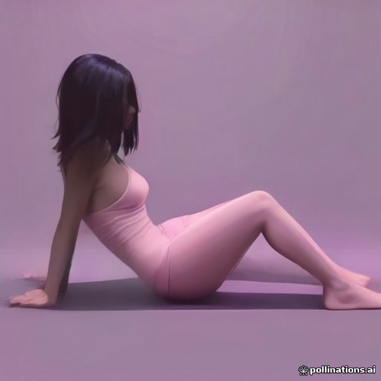
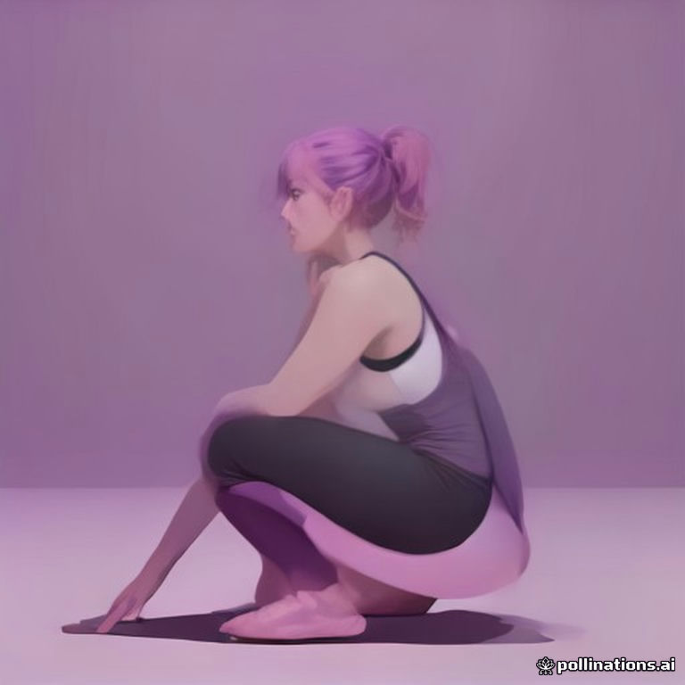
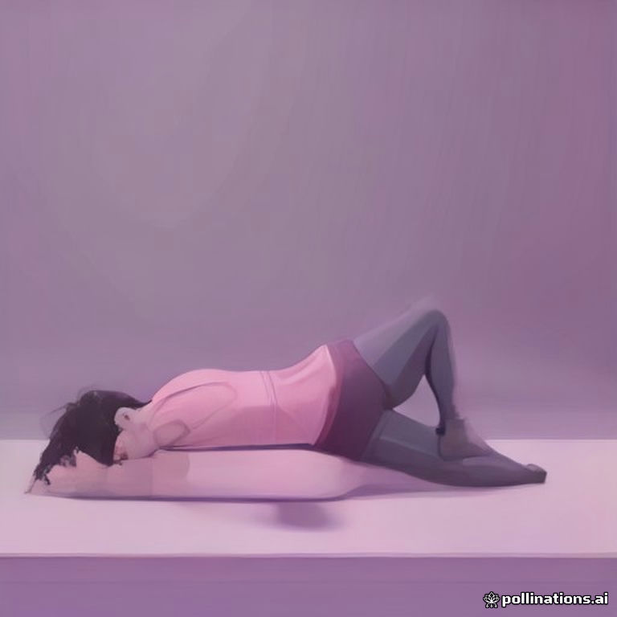

Glute Bridge

Kniebeuge

Dead Bug
Drei Wege im Vergleich, jeweils dieselben Übungen: Glute Bridge, Kniebeuge, Dead Bug.
Wird im Browser live gezeichnet und bewegt sich (kein Video, winzig, offline, einheitlich in Peach-Farben). Jede Übung = zwei Haltungen, die App bewegt zwischen ihnen. Vorderes Bein/Arm hell, hinteres dunkel.
Glute BridgeHüfte hoch und runter
Kniebeugerunter und hoch
Dead BugArm und Gegenbein strecken
Gleicher Prompt-Stil für alle drei. Ergebnis: alle drei Haltungen falsch (sitzt statt Brücke, hockt statt Kniebeuge, liegt auf der Seite statt Dead Bug), Logo im Bild, kostenlos nur 1 Bild alle 45 Sekunden.

Glute Bridge

noch nicht fertigKniebeuge

noch nicht fertigDead Bug
Für etwa die Hälfte der Übungen vorhanden. Verschiedene Models und Studios.
Glute Bridge
Kniebeuge
Dead Bug